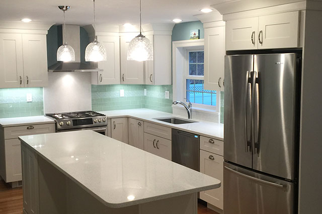
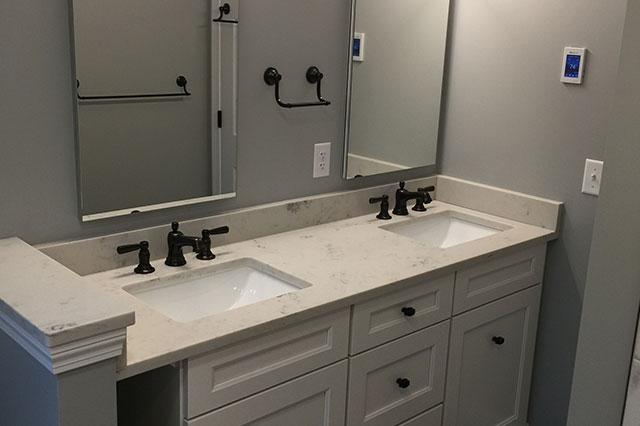

Kitchen Remodeling
Breathe new life into a tired kitchen — custom cabinetry, stone counters, and a layout that finally works.
Kitchen Remodeling done right
Your kitchen is where your home happens. We design and build full kitchen remodels that balance everyday function with the finishes you have always wanted — from a refreshed layout to a wall-down transformation.
We work closely with experienced kitchen designers to plan every cabinet run, appliance location, and lighting circuit before a single demo day. The result is a kitchen that fits your life and is built to last.
What’s included
Custom cabinetry
Semi-custom and fully custom cabinets, sized and finished to your space.
Counters & tile
Quartz, granite, and tile backsplashes installed to the millimeter.
Lighting & electrical
Recessed, under-cabinet, and pendant lighting on proper circuits.
Layout changes
Removing walls and reworking the floor plan for better flow.
Plumbing & sinks
Relocated sinks, pot fillers, and disposal-ready fixtures.
Finish carpentry
Trim, islands, and built-ins finished by hand.
A look at the craft


From idea to handover
Consult
We visit your home, listen to your goals, and provide a free estimate.
Design
We plan every detail with experienced kitchen and home designers.
Build
Craftsmanship on-site and on schedule, with the owner involved throughout.
Reveal
We hand back a home that fits your life — and is built to last.
Frequently asked
How long does a kitchen remodel take?+
Most full kitchens run 4–8 weeks on site once materials are in hand. We give you a realistic schedule with your estimate and keep you updated throughout.
Can you move walls or open up the space?+
Yes. Opening a kitchen to a dining or living area is one of our most requested projects. We handle the framing, any beams, and the permits.
Do you help with design and material selection?+
We work alongside experienced kitchen designers and will guide you through cabinets, counters, and finishes so the choices fit both your taste and budget.
Ready to start your kitchen remodeling?
Tell us what you have in mind and we’ll get back to you with a no-obligation estimate.